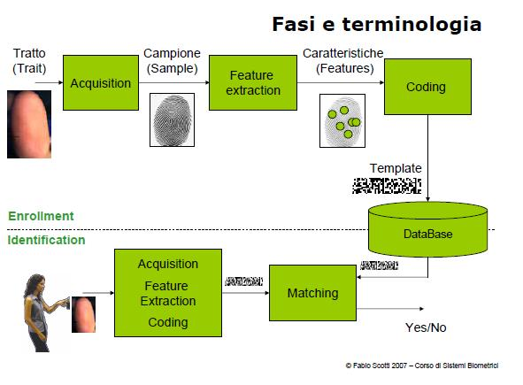
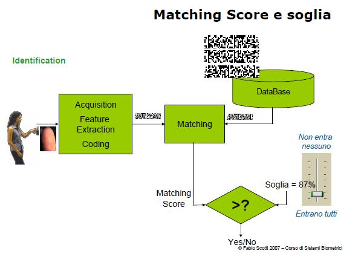

Torna a Sistemi Biometrici
:: Sistemi Biometrici Lezione 1 ::
Lezione 1
Biometria, verifica e autenticazione
Biometria: tecniche automatiche per l'identificazione degli individui basata sulle loro caratteristiche fisiche e comportamentali
Identificazione peronale: l'operazione che associa una identità ad un individuo.
L'identificazione può essere distintain die categorie:
- verifica dell'identità (autenticazione)
- riconoscimento (Identificazione)
La verifica dell'identità (Autenticazione) equivle rispondere alla domanda:
Sono chi dicco di essere?
Il riconoscimetno dell'identità (Identificazione) equivle rispondere alla domanda:
Chi sono io?
Autenticazione/Identificazione POSITIVA
quando si cerca i stabilire con elevata accuratezza che l'utente ia chi dice di essere
- esempio'''Identificazione positiva: controllo iride per vedere se appartengo alla lista di coloro che possono accedere in un dato posto
- esempio di autenticazione posotiva: il bancomat controlla che sta usando la carta sia il legittimo proprietario
Autenticazione/Identificazione NEGATIVA
quando si cerca i stabilire con elevata accuratezza se l'utente non è chi dice di essere
- esempio identificazione negativa: il sitema di videocamere controlla che chi passa non sia un terrorista
Metodi per l'identificazione
Si basano su due principali modalità:
- POSSESSO( o token-based) - basato su qualcosa che possiedi
Svantaggi: I token o la chiave possono essere persi, prestati a chi non dovrebbe usarli o usati in contesti non autorizzati
- CONOSCENZA - basato su qualcosa che sai
Svantaggi: la password può essere dimanticata, individuata da malintenzionati
Alcuni sistemi funzionano in modo ibrido usando le due modalità
Metodi biometrici
L'identificazione avviene in base alle caratteristiche fisiche e/o comportamentali dell'individuo.
Fisiche cme iride, impronta, geometria della mano, volto..
Comportamentali come voce, firma, camminata..
Principali vantagi:
- L'accuratezza dell'identificazione può essere molto più elevata dei metodi tradizionali
- solo i metodi biometrici possono realizzare una identificazione negativa
Principali svantagi:
- costo elevato
- rispondono con un livello di matching e noncon un semplice si/no
- alcune persone li vedono come una invasione della privacy
Le sette proprietà
- universalità: ogni persona deve possedere questo tratto/caratteristica
- unicità: due persone non devono avere lo stesso tratto uguale
- permanenza: la caratteristica deve essere invariante nel tempo
- misurabilità: il tratto deve poter essere esaminato quantitativamente
- performabilità: accuratezza dell'identificazione
- accettabilità: % di persone che protrebbero accettare l'uso del sistema biometrico
- circonvenzione: grado di difficoltà nell'ingannare il sistema biometrico
Acquisizione e Identificazione
- Fase di acquisizione o ENROLLMENT
il tratto biometrico viene per la prima volta acquisito dal sistema e registrato
- Fase di identificazione o IDENTIFICATION
il tratto biometrico viene nuovamente acquisito.Se risulta sufficientemente aderente alle informazioni registrate nel sistema biometrico l'accesso è consentito.

Fasi e terminologia

Fasi e terminologia
Torna a Sistemi Biometrici